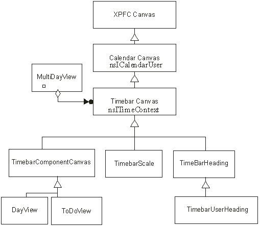
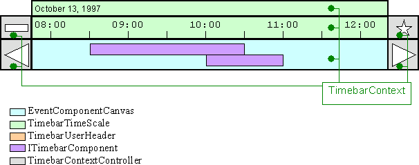
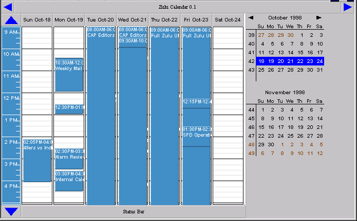
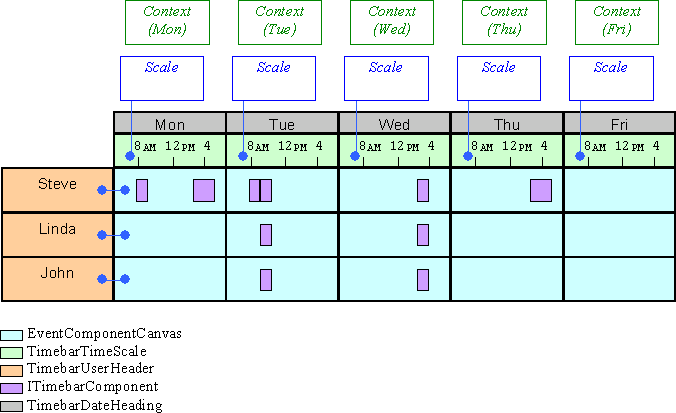

|
Zulu: UI DesignAuthors: Steve Mansour, Eric York, Greg ScallanUpdated: 16 October 1998
The way time-based information is graphically displayed centers around these fundamental classes:
A Calendar View is not limited to traditional calendar elements such as events, to-dos, or journal entries. Anything having a time significance can be displayed. For example, a URL history list could be graphically displayed based on the time the URL was visited. Another example could be an e-mail inbox displaying links to messages based on the time the message was sent.

A Timebar ViewThe example below shows a very simple Timebar interface for showing a day's appointments in a horizontal view. The image is not meant to show what the user would see. The specific look and feel of the rendering will described by the UE folks. Instead this diagram shows the outline of each timebar-related component and its function. The text and rendering within each box suggest what might appear in the real implementation.The interface consists of:
Changes to the TimebarContext values are done with TimebarContextControllers. For example, the arrow button on the right side of the page might be given the function of adding an hour to the DTTop and DTBottom values. This would have the effect of shifting what the user sees by an hour. Similarly, other decorators could be used to change dates, the duration of time shown in the canvas area, etc.  A Multi-Day ViewThis view can display any arbitrary collection of days. The image below was rendered by the implementation of the Multi-Day View in Zulu. The interesting thing about this view is the small miniature calendar (the minical) in the upper right corner. It is a Timebar Context Controller that is capable of selecting multiple days (by using the mouse to sweep rows or columns of data). The canvas containing the two days worth of events is capable of receiving a vector of days from the minical and replicating event canvases for each date. This provides a powerful view capable of showing any collection of dates that can be indicated on the minical. The XML listed below builds this view: week.cal A Group Week ViewThis example shows how the components can be arranged to produce a weekly view for a group of schedules. The image is not meant to show what the user would see. The specific look and feel of the rendering is described in the Zulu UE Specification. Instead this diagram shows the outline of each Timebar-related component and its function. The text and rendering within each box suggests what might appear in the real implementation.All TimebarCanvas elements in a particular column refer to a single TimbarContext that specifies the date and time displayed in that column. Each column uses a different scale, in the second row, to identify the section of the day being shown. The rows of this table, beginning at the 3rd row, represent different peoples' calendars. The calendar is constant along the rows. The first column contains a NameHeading and is linked to the calendar of the TimebarComponentCanvas in the second column.  The XML listed below builds this view: Muilt Week View XML |
||||||||||
| Copyright © 1998-1999 The Mozilla Organization. | ||||||||||